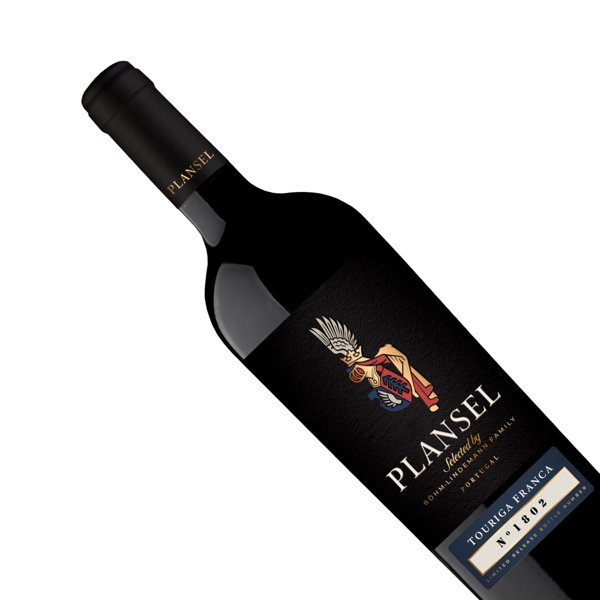
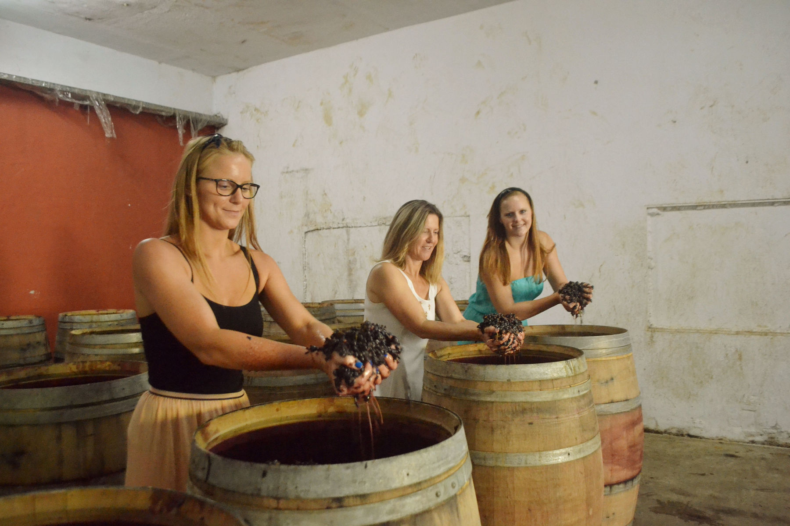
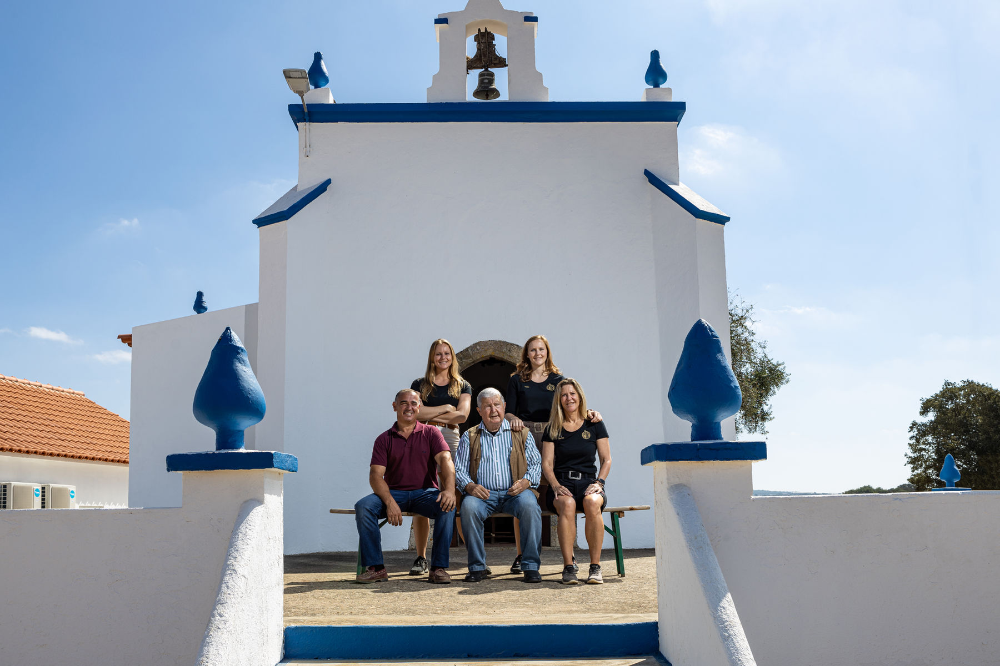

 我们的产品01
我们的产品01

Plansel 一览
您可以在 Plansel 找到什么。
从杯中酒到地里的葡萄藤：一家陪伴酒庄50年的家族企业。
- 01葡萄酒活动葡萄牙及国际活动，每周更新。
- 02在线购买 Plansel 葡萄酒来自阿连特茹的红、白、桃红葡萄酒，酒庄直供。
- 03购买葡萄苗Viveiros Plansel 的认证葡萄苗与无性系。
- 04入住与庆典：Quinta 庄园公寓、房车停车位，以及可配或不配服务人员的婚礼、企业和聚会场地。
- 05与 Dorina 和 Luísa 一起品鉴可付费预订：我们可前往您的活动、酒店或展会，覆盖欧洲及全球，也可安排表演式品鉴。两人均为 Mundus Vini 官方评审。
- 06侍酒师培训按伦敦标准开设、国际认可的 WSET 课程，提供葡萄牙语和英语授课。
- 07灌装与咨询小酒庄可在此灌装，并获得三位拥有德国及国际经验的酿酒师的咨询。
- 08收获机及司机葡萄与橄榄机械采收：我们提供收获机及经验丰富的司机。
- 09办公、营销与 AI 外包服务为小酒庄提供记账、Instagram 和带网店的网站，另有 Plansel Technology：AI 应用与管理者培训。
 活动02
活动02
本周葡萄牙葡萄酒动态。
葡萄酒节、品鉴会、展会和餐厅推荐。每周四更新，直接链接到主办方。
葡萄牙
- 2026年12月4–6日 · 维拉德弗拉德斯VITIFRADES
- 2027年1月16日 · 维迪盖拉2026欧洲葡萄酒之城闭幕晚会
- 2027年2月14–21日 · 波尔图Wine & Travel Week
- 2027年2月18–21日 · 波尔图Essência do Vinho
- 2027年2月底 · 波尔图Simplesmente Vinho
- 2027年4月30日–5月2日 · 梅尔加苏Festa do Alvarinho e do Fumeiro
- 2027年5月29日 · Quinta da PlanselPlansel Rosé Party
- 2027年7月2–3日 · 拉梅戈Douro & Porto Wine Festival
- 2027年7月13–19日 · 蓬蒂迪利马Festa do Vinho Verde
- 2027年9月中旬 · 雷瓜Festa das Vindimas do Douro
国际
- 2027年2月 · 巴黎Wine Paris
- 2027年3月 · 杜塞尔多夫ProWein
- 2027年4月 · 维罗纳Vinitaly
- 2027年春 · 诺伊施塔特Mundus Vini
- 2027年5月 · 伦敦London Wine Fair
餐厅推荐
- 埃武拉Restaurante Fialho
- Vila Nova de MilfontesTasca do Celso
- 里斯本Taberna da Rua das Flores
- 波尔图Prova
- 蒙特莫尔诺武Quinta da Plansel 餐酒体验
日期仅供参考，出行前请向主办方确认。
提交活动
广告 · 970 × 250 横幅 · 由 symplr 提供

荣获 Mundus Vini 奖项
盲品评审，屡获殊荣。
我们定期参加 Meininger 出版社主办的国际葡萄酒大赛 Mundus Vini。国际评审团在不看酒标、不知酒名的情况下盲品。因此每一枚奖牌都是 Plansel 葡萄酒的独立品质认证。
 Quinta da Plansel 25 Anos (1997–2022)限量单版
Quinta da Plansel 25 Anos (1997–2022)限量单版- DL Dorina Lindemann Tinto Reserva 20212024
- Plansel Grande Escolha 20192024
 Júlia Lindemann Limited Edition 20192024
Júlia Lindemann Limited Edition 20192024- 6 枚金奖和 5 枚银奖2023
- Plansel Selecta Reserva Branco 20142015

Christoph & Andrea MeiningerMeininger 出版社管理层
Meininger 的 Mundus Vini Plansel 葡萄酒 庄园报道
Dorina 和 Luísa 还是 Mundus Vini 的官方评审。
- 1975在蒙特莫尔诺武种下第一批葡萄
- ~50 %葡萄牙认证葡萄苗来自 Plansel 无性系*
- 50+年葡萄牙品种无性系选育
- 400.000 lQuinta da Plansel 年产葡萄酒
- WSET庄园内的国际葡萄酒学校
* Plansel 公司数据，引自 Vinetur，2026年11月9日
 葡萄酒03
葡萄酒03
Quinta da Plansel · 葡萄酒
葡萄牙高端葡萄酒，可追溯至每一株葡萄藤。
毕业于盖森海姆大学的酿酒师Dorina自1993年起用父亲的葡萄藤酿酒。每一瓶酒，我们都知道它来自哪个克隆品系。


 体验04
体验04
葡萄酒旅游 · Quinta da Plansel
顶级体验，距里斯本仅一小时。
酒窖品鉴、葡萄园晚宴、酒庄住宿以及Plansel金酒体验。


 学院05
学院05

Plansel International Wine School
终于读懂葡萄酒
按伦敦标准开设的WSET官方课程，由WSET讲师Wilmy Matton、酿酒师Dorina Lindemann及客座教授授课，课堂就在苗圃、实验室和酒窖之间。
- WSET Level 1 · Wines面向餐饮从业者和葡萄酒爱好者的入门课程1 天
- WSET Level 2 · Wines世界葡萄品种与产区3 天
- WSET Level 3 · Wines面向未来的侍酒师5 天
- Masterclass Portugal无性系、风土、酒窖，结合 Böhm 档案2 天
info@planselwineschool.com · +351 266 898 921
 科学06
科学06
Plansel Science · Böhm档案
每一瓶酒背后的科学。
Plansel意为“精选植物”（Plantas Seleccionadas）。这个名字背后是一项与大学合作的研究计划，为葡萄牙的葡萄品种应对未来气候做准备。


“葡萄牙需要自己的研究，才不会依赖那些不适合本国土壤和气候的品种。”
Comendador Jorge (Hans Jörg) Böhm，1938年生于德国诺伊施塔特（魏因大道），出身德国葡萄酒商家庭。1961年，他的帆船在卡斯凯什附近搁浅，他从此爱上了葡萄牙。到1969年，他领导的家族企业已成为德国最大的葡萄牙葡萄酒进口商。
他在盖森海姆学习葡萄育种后，于1981年创立 Viveiros Plansel，并与埃武拉大学及今天的 INIAV 合作，开展了葡萄牙品种的首次系统性无性系选育。30多个研究项目之后，Plansel 无性系已在加州、新西兰和澳大利亚获得认可，葡萄牙很大一部分葡萄园种植的都是 Plansel 葡萄苗，经由 Viveiros Plansel 和 Vinverus 销售。
2006年，葡萄牙共和国总统授予他农业功绩勋章司令级勋位（Comendador de Mérito Agrícola）。
 2010年 OIV 奖
2010年 OIV 奖
权威著作 · Chaves Ferreira，2007
O Grande Livro das Castas
葡萄牙葡萄品种大全。由 Comendador Jorge Böhm 主编，获国际葡萄与葡萄酒组织（OIV）嘉奖。书中介绍了葡萄牙的本土品种，Plansel 葡萄酒也正是由这些品种酿成。
葡萄牙语 · 原版现已发售
DE · ENAI 翻译，可预订
FR · ES2027
中文 · PL2027
-
 新书 · 2026Livro Branco das Castas Vitícolas抗真菌新品种：葡萄牙如何减少植保用药。
新书 · 2026Livro Branco das Castas Vitícolas抗真菌新品种：葡萄牙如何减少植保用药。 -
 英文版The Portuguese Vineyard and Wine Book历史、葡萄品种、风土、产区与餐酒搭配。
英文版The Portuguese Vineyard and Wine Book历史、葡萄品种、风土、产区与餐酒搭配。 -
 Dinalivro · 2010D. João, Marquês de Montemor-o-Novo我们 Marquês de Montemor 系列葡萄酒背后的故事。
Dinalivro · 2010D. João, Marquês de Montemor-o-Novo我们 Marquês de Montemor 系列葡萄酒背后的故事。
2006农业功绩勋章司令级勋位，由共和国总统授予
2008最佳葡萄栽培技术专家，Revista de Vinhos
2 × OIV国际葡萄与葡萄酒组织图书奖
2013埃武拉大学荣誉奖牌
2014里斯本科学院荣誉勋章
无性系选育
从老葡萄园中挑选最健康、最具表现力的植株加以繁育。
抗病品种
需要更少植保用药的葡萄。Böhm 认为这是行业最重要的任务。
气候变化
适应更炎热夏季和更少水资源的种苗，在阿连特茹试验。
古老品种
几乎被遗忘的葡萄牙品种被重新发现，并在酿酒中试验。
向 Böhm 档案提问
AI 原型一个基于 Plansel 50年研究训练的 AI，用您的语言回答专业问题，并注明书中出处。请选择一个示例问题：
无性系是由单株特别优良的葡萄繁育出的后代，同一无性系的所有植株基因完全相同。Plansel 在老葡萄园中寻找这样的植株，花数年时间检测其健康、产量和酒质，只繁育最好的。出处：《Livro Branco das Castas Vitícolas》，无性系选育章节（示例引用）
 科技07
科技07

Plansel Technology
我们带领酒庄迈入 AI 时代。
AI 正以小酒庄难以跟上的速度改变销售、营销和管理。我们为您运用 Anthropic、Google Gemini 和 OpenAI 的工具，并教您如何使用。
证据就在眼前： 本网站本身就在使用 AI：侍酒师推荐葡萄酒，Böhm 档案解答专业问题，所有内容提供七种语言。
预约咨询定制 AI 培训
为管理者和团队量身定制：使用您自己的葡萄酒、客户和流程进行培训。可用德语、葡萄牙语或英语授课，在庄园或您的酒庄进行。
- 写出真正有效的提示词
- 用于销售和办公的专属 AI 助手
- 数据保护与 AI 安全使用
为您的酒庄打造的 AI 应用
- 为每位网店顾客提供个性化建议的 AI 侍酒师
- 为每位客户量身定制的邮件和电子报
- AI 智能体全天候回复客人咨询与预订
- 酒款介绍、酒标和网站自动生成7种语言
- 用您的照片制作 Instagram 帖子和短视频，由 AI 撰写文案
- 基于您自有数据的销售与库存预测
- 发票与票据自动读取、核对并预记账
外包服务
您专心酿酒，其余交给我们：带网店的网站、社交媒体、记账。一位对接人，固定月费。
 Wine Letter08
Wine Letter08
Plansel葡萄酒周刊 · 每周四
五分钟，拓展您的葡萄酒知识。
免费，使用您的语言。内容来自葡萄酒学校和Böhm档案。
- 01未来30天全球葡萄酒活动
- 02葡萄牙葡萄酒活动日程
- 03一家本周酒庄
- 04酒单出色且供应 Plansel 的餐厅
- 05在葡萄牙可以喝到 Plansel 的酒店
- 06一堂葡萄酒学校课程
 合作网络09
合作网络09
合作网络
我们的合作伙伴。

Universidade de Évora自1993年首批葡萄酒起合作研究
INIAV葡萄牙国家农业与兽医研究所
WSET London葡萄酒学校认证课程
Meininger德语葡萄酒市场媒体合作伙伴
 家族10
家族10
Böhm-Lindemann 家族
一个世代以葡萄酒为生的家族。
一次海上意外成就了毕生事业：三代人用葡萄藤、研究和酒窖造就了 Quinta da Plansel。
-
Jorge Böhm创始人、葡萄育种家、Comendador
-
 Dorina酿酒师，酒庄的灵魂
Dorina酿酒师，酒庄的灵魂
- Júlia市场营销、社交媒体与财务
-
 Luísa酿酒与国际销售
Luísa酿酒与国际销售
- 18世纪
Böhm 家族经营葡萄酒贸易，成为德国最重要的葡萄酒进口商之一。
- 1961
Jorge Böhm 的帆船在卡斯凯什港搁浅。他留了下来，了解这个国家，并看到了阿连特茹葡萄品种的潜力。
- 1975
他在蒙特莫尔诺武附近购入第一批土地，由此诞生了 Viveiros Plansel 苗圃。
- 1990年代
他的女儿、毕业于盖森海姆的酿酒师 Dorina 与丈夫 Thomas Lindemann 来到葡萄牙。
- 1993
与 Paulo Laureano 合作，第一款葡萄酒在埃武拉大学实验酒厂诞生，取名 Plansel，意为“精选植物”。
- 1998
Dorina 和 Thomas 用五年时间建成了自己的酒庄：Quinta da Plansel。
- 如今
女儿 Júlia 和 Luísa 共同经营。酒庄每年出产40万升葡萄酒，分为五个系列。
出处：Quinta da Plansel，《A história Lindemann-Böhm》与《A nossa equipa》。